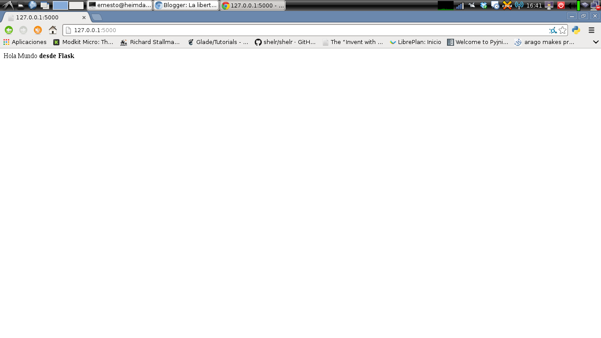

Micro Framework de desarrollo web Flask
Posted on sáb 31 mayo 2014 in Tutorial Python • 1 min read
Flask es un microframework escrito en Python y basado en la especificación WSGI y el motor de plantillas Jinja2.
Su documentación la pueden encontrar en el siguiente enlace.
La instalación en distribuciones basadas en Debian se puede hacer por medio de apt:
#apt-get install python-flask python-flask-doc
También se puede realizar con pip:
#pip install flask
Ahora se creará un script (app.py) que diga hola mundo por medio de flask:
#Se importa flask de Flask
from flask import Flask
#Se crea la instancia de la aplicación app.
app = Flask(__name__)
#Se define el decorador route donde se da la ruta del directorio del servidor web.
@app.route('/')
#Se crea la función hola_mundo que retorna un string con contenido en html.
def hola_mundo():
return "Hola Mundo <strong>desde Flask</strong>"
#Se define la ejecución de la aplicación.
if __name__ == '__main__':
app.run()
Se ejecuta el script:
ernesto@heimdall:~/proyectos/tutorialflask$ python app.py
* Running on http://127.0.0.1:5000/
Ahora se abre el navegador con el url mostrado anteriormente, la consola muestra lo siguiente:
127.0.0.1 - - [31/May/2014 16:41:12] "GET / HTTP/1.1" 200 -
127.0.0.1 - - [31/May/2014 16:41:14] "GET /favicon.ico HTTP/1.1" 404 -
La página principal abre sin problema, luego devuelve un mensaje 404 que no logra encontrar un archivo favicon.iso (el cual no existe en realidad).
La siguiente imagen muestra la página desde chrome:

¡Haz tu donativo! Si te gustó el artículo puedes realizar un donativo con Bitcoin (BTC) usando la billetera digital de tu preferencia a la siguiente dirección: 17MtNybhdkA9GV3UNS6BTwPcuhjXoPrSzV
O Escaneando el código QR desde la billetera: